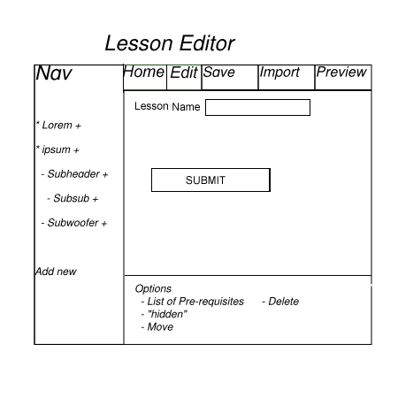

2.3.1.2 Creating a new Lesson
For an instructor to add a new lesson for a class, he or she clicks on the "+" buttons located to the right of a topic on the navigation bar. This will create a subsection under the selected topic. The following screen is shown and once completed, a new lesson is created.

FIXME
Lesson name will take in the name of the lesson from the instructor.
Once the instructor has entered the lesson name, they are able to submit their lesson. The instructor is then taken to the edit screen for the main page of the lesson(More information can be found in "Editing Lessons"). The class will also be added to their navigation bar and the instructor will then be able to create sub-lessons for the created lesson.
Since a lesson can only be created as a subtopic and may be within another lesson, you get a directory like structure with classes containing lessons which have sub-lessons themselves.
Prev: creating classes
| Next: editing lessons
| Up: lesson manager
| Top: index